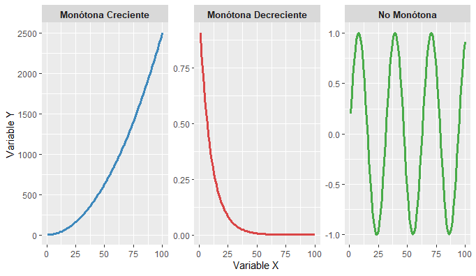
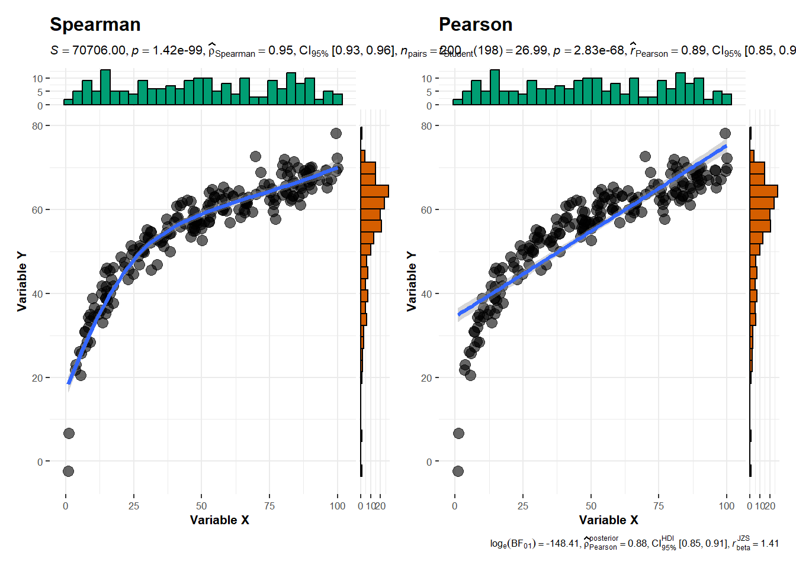

x <- c(10, 20, 30, 40, 50)
y <- c(3, 7, 9, 12, 15)
# Rangos
rg_x <- rank(x)
rg_y <- rank(y)
rg_x; rg_y[1] 1 2 3 4 5[1] 1 2 3 4 5En muchos análisis estadísticos se suele comenzar evaluando la asociación entre dos variables mediante el coeficiente de correlación de Pearson, el cual es apropiado cuando la relación entre ellas es esencialmente lineal. Sin embargo, en la práctica no siempre las variables se comportan siguiendo un patrón estrictamente lineal, pues es común encontrar conjuntos de datos en los que existe algún tipo de asociación, pero cuya forma no obedece a una tendencia lineal definida; en tales casos, el coeficiente de Pearson puede ofrecer resultados poco representativos o incluso engañosos.
Para atender adecuadamente estas situaciones, se recurre al coeficiente de correlación de rangos de Spearman, también llamado simplemente correlación de Spearman. Este es un método no paramétrico que evalúa la asociación transformando los valores originales en rangos, de modo que el análisis se centra en el orden relativo de los datos y no en su magnitud absoluta. El coeficiente se representa como \rho (rho) y cuantifica la fuerza y dirección de una relación monotónica entre las variables, diferenciándose así de Pearson, cuyo enfoque se limita a relaciones lineales.
Esta característica convierte a Spearman en una alternativa más robusta cuando los datos presentan relaciones no lineales, distribuciones no normales o valores atípicos (no asume homocedasticidad) que pueden distorsionar sustancialmente la correlación de Pearson. En términos conceptuales, puede entenderse a Spearman como una aplicación del coeficiente de Pearson, pero calculado sobre valores ordenados o jerarquizados, razón por la cual comparte varios de sus principios matemáticos, aunque con ventajas claras en contextos no paramétricos.
Cuando los datos no contienen empates, \rho se puede hallar calculando la diferencia de los valores ordenados mediante la siguiente ecuación:
r_s = 1-\frac{6 \sum d_i^2}{n(n^2 - 1)} \tag{1}
Donde d_i es la diferencia de las variables ordenadas y n es el número de muestras. Cuando el conjunto de datos contiene empates, la fórmula anterior arrojará valores incorrectos o sesgados. Cuando los datos contienen empates, el coeficiente de Spearman, se calculan sobre los rangos de las variables. Así, la correlación se expresa como:
r_s = \frac{\sum_{i} (rg_{x_i} - \overline{rg_x})(rg_{y_i} - \overline{rg_y})} {\sqrt{\sum_{i} (rg_{x_i} - \overline{rg_x})^2 \; \sum_{i} (rg_{y_i} - \overline{rg_y})^2}}
Lo cual es equivalente a su forma basada en covarianza entre rangos:
r_s = \rho_{rg_x, rg_y} = \frac{cov(rg_x, rg_y)}{\sigma_{rg_x} \sigma_{rg_y}} \tag{2}
donde:
\text{cov}(rg_x, rg_y) = \frac{1}{n} \sum_{i} (rg_{x_i} - \overline{rg_x})(rg_{y_i} - \overline{rg_y})
y las desviaciones estándar también corresponden a los rangos:
\sigma_{rg_x} = \sqrt{\frac{1}{n} \sum_{i} (rg_{x_i} - \overline{rg_x})^2}
donde \rho denota el coeficiente de Pearson usual, pero sobre las variables ordenadas.cov(rg_x, rg_y) es la covarianza y \sigma_{rg_x}, \sigma_{rg_y} son las desviaciones estándar de las variables ordenadas.
A groso modo cuando no hay empates en las observaciones, se usa la formula corta (Ecuación 1) o tambien Pearson pero sobre los rangos, rg_x, rg_y, pero cuando hay empates, ahi ya no se usa la formula corta, solo pearson sobre los rangos (Ecuación 2).En general el coeficiente de Spearman es exactamente la correlación de Pearson pero aplicada a los rangos (ranks) de los datos.
La hipótesis nula para este coeficiente es:
H_0 : \rho = 0
que se puede comprobar mediante el estadístico t con la siguiente fórmula:
t = \frac{r_s}{\sqrt{\frac{1-r_s^2}{n-2}}} Esta prueba se basa en la aproximación de Pearson aplicada a rangos donde:
La asociación monótona indica que las variables tienden a moverse en la misma dirección relativa, pero no necesariamente a un ritmo constante. Es importante destacar que todas las correlaciones lineales son monótonas, pero no todas las asociaciones monótonas son lineales, ya que también puede haber asociaciones monótonas no lineales.
Por otro lado Un valor alto o bajo de \rho indica asociación entre variables, pero no implica que una variable cause cambios en la otra (correlación no implica causalidad). La inferencia causal requiere diseño experimental o métodos adicionales de análisis.
Para fines académicos se presentan ejemplos sintéticos para corroborar como funcionan ambas formulas usando la función cor() aplicando Spearman directamente y Pearson sobre los rangos, con el objetivo de corroborar lo mencionado anteriormente tanto para empates y sin empates.
x <- c(10, 20, 30, 40, 50)
y <- c(3, 7, 9, 12, 15)
# Rangos
rg_x <- rank(x)
rg_y <- rank(y)
rg_x; rg_y[1] 1 2 3 4 5[1] 1 2 3 4 5Se obtienen los rangos a los cuales se les aplicara el coeficiente de pearson.
# Spearman manual (Pearson sobre rangos)
rs_manual <- cor(rg_x, rg_y, method = "pearson")
rs_manual[1] 1se observa que al aplicar pearson a los rangos se tiene un valor de 1
# Spearman automático
rs_cor <- cor(x, y, method = "spearman")
rs_cor[1] 1Ahora al aplicarse la función de Spearman directamente, se obtiene el mismo valor 1
Al no existir empates y al ser la relación perfectamente monótona creciente, el coeficiente de Spearman es exactamente 1, tanto al aplicar la fórmula manual en R (Pearson sobre los rangos) como al usar la función directa de R. Ambos métodos son equivalentes en ausencia de empates.
x <- c(10, 10, 20, 30, 30, 30)
y <- c(5, 6, 6, 9, 9, 12)
# Rangos con empates
rg_x <- rank(x, ties.method = "average")
rg_y <- rank(y, ties.method = "average")
rg_x; rg_y[1] 1.5 1.5 3.0 5.0 5.0 5.0[1] 1.0 2.5 2.5 4.5 4.5 6.0Se obtienen los rangos para el caso de empates promediando con ties.method = "average" a los cuales se les aplicara el coeficiente de pearson.
# Spearman manual con Pearson sobre rangos
rs_manual <- cor(rg_x, rg_y, method = "pearson")
rs_manual[1] 0.9057895se observa que al aplicar pearson a los rangos se tiene un valor de 0.906
rs_cor <- cor(x, y, method = "spearman")
rs_cor[1] 0.9057895Ahora al aplicarse la función de Spearman directamente, se obtiene el mismo valor 0.906
En presencia de empates, Spearman ajusta los rangos asignando promedios. El valor calculado manualmente coincide exactamente con el obtenido mediante cor(..., method="spearman"), dado que el algoritmo interno también trabaja aplicando Pearson sobre los rangos ajustados.
Una función o relación f(x) entre x e y es monótona si mantiene un único sentido en todo su recorrido: siempre sube o siempre baja. Puede tener tramos planos, pero no puede cambiar de dirección, ademas no exige rectas; solo exige consistencia en el orden de los valores.

Las relaciones monotónicas describen cómo varía una variable respecto a otra sin requerir linealidad estricta. En una relación monotónica creciente (\rho \approx +1), Y aumenta conforme X aumenta, incluso si la forma es lineal, cuadrática o exponencial; Spearman detecta perfectamente esta tendencia. En una relación monotónica decreciente (\rho \approx -1), X incrementa mientras Y disminuye de manera consistente, y Spearman identifica claramente esta correlación negativa. Finalmente, en una relación no monotónica (\rho \approx 0), la asociación cambia de dirección sube, baja y vuelve a subir, por lo que no existe un orden estable entre X e Y y Spearman indica ausencia de monotonicidad.
Se generó un conjunto de datos sintético compuesto por 200 observaciones para dos variables continuas x e y. Antes de comparar los coeficientes de correlación de Pearson (paramétrico) y Spearman (no paramétrico), es necesario verificar si los supuestos asociados al uso de Pearson se cumplen, especialmente normalidad.
Aunque Spearman también puede aplicarse a variables cuantitativas, sin embargo se debe aplica a este tipo cuando la relación no es lineal pero sí monótona, no se cumple normalidad, o existen valores atípicos,
# creación de la data
set.seed(999)
x <- sort(runif(200, 1, 100)) + rnorm(200, 0, 2)
x <- scales::rescale(x, to = c(1, 100)) # reescala para mantener rango
y_true <- 15 * log(x) # relación monótona no lineal
y <- y_true + rnorm(200, 0, 3)
data <- data.frame(x, y)Aplico el test de normalidad para validar el uso
library(nortest)
# Test Anderson-Darling
ad_x <- ad.test(data$x)
ad_y <- ad.test(data$y)
ad_x
Anderson-Darling normality test
data: data$x
A = 2.4259, p-value = 3.734e-06ad_y
Anderson-Darling normality test
data: data$y
A = 5.9481, p-value = 1.112e-14Ambas variables muestran una fuerte desviación de la normalidad según la prueba de Anderson–Darling, por lo que se recomienda usar métodos no paramétricos, como Spearman para correlación.
# Correlaciones
cor_pearson <- cor(data$x, data$y, method = "pearson")
cor_spearman <- cor(data$x, data$y, method = "spearman")
cor_pearson
## [1] 0.8867464
cor_spearman
## [1] 0.9469692library(ggstatsplot)
library(ggplot2)
# Gráfico usando Spearman
spearman <- ggscatterstats(
data = data,
x = x,
y = y,
type = "nonparametric",
title = "Spearman",
xlab = "Variable X",
ylab = "Variable Y",
point.args = list(size = 3, alpha = 0.6),
smooth.line.args = list(method = "loess", linewidth = 1.2),
ggplot.component = list(
theme(text = element_text(size = 8))
)
)
pearson <- ggscatterstats(
data = data,
x = x,
y = y,
type = "parametric",
title = "Pearson",
xlab = "Variable X",
ylab = "Variable Y",
point.args = list(size = 3, alpha = 0.6),
smooth.line.args = list(method = "lm", linewidth = 1.2),
ggplot.component = list(
theme(text = element_text(size = 8))
)
)
library(patchwork)
spearman + pearson
Pearson baja porque evalúa linealidad.
Spearman se mantiene elevada porque evalúa asociación monotómica.
Este caso demuestra claramente la diferencia conceptual entre ambos coeficientes.
Es importante saber que la no normalidad no invalida calcular Pearson, solo afecta la inferencia (p-value, IC).
Aunque Spearman es no paramétrico, sí tiene supuestos mínimos. Puedes explicar
l coeficiente de correlación de Spearman (\rho) es una medida no paramétrica que evalúa la fuerza y dirección de la relación monótona entre dos variables. Sus supuestos son:
Variables ordinales, de intervalo o de razón:
Las variables analizadas deben ser al menos ordinales, ya que Spearman se basa en los rangos de los datos.
Relación monótona:
Se asume que la relación entre las variables es monótona (creciente o decreciente) en la población. No es necesario que sea lineal.
Ausencia de valores extremos influyentes:
Spearman es menos sensible a outliers que Pearson, pero valores extremadamente atípicos pueden afectar los rangos y la magnitud de \rho.
Muestreo aleatorio:
Los datos deben provenir de una muestra representativa de la población, Spearman asume muestreo aleatorio para que sus propiedades de estimador y el test asociado sean válidos..
No requiere normalidad ni homocedasticidad:
A diferencia de Pearson, Spearman no asume que las variables sigan distribución normal ni que presenten varianzas homogéneas, por lo que es adecuado para datos con distribuciones sesgadas o heterocedásticas.
El coeficiente de correlación de Spearman (\rho) mide la fuerza y dirección de la relación monótona entre dos variables, utilizando los rangos de los datos.
Aunque los límites exactos dependen del contexto y la disciplina, una guía generalmente aceptada es:
| Rango de \rho | Interpretación |
|---|---|
| -1.00 a -0.91 | Correlación negativa perfecta |
| -0.90 a -0.76 | Correlación negativa muy fuerte |
| -0.75 a -0.51 | Correlación negativa considerable |
| -0.50 a -0.11 | Correlación negativa media |
| -0.10 a -0.01 | Correlación negativa débil |
| 0.00 | No existe correlación |
| +0.01 a +0.10 | Correlación positiva débil |
| +0.11 a +0.50 | Correlación positiva media |
| +0.51 a +0.75 | Correlación positiva considerable |
| +0.76 a +0.90 | Correlación positiva muy fuerte |
| +0.91 a +1.00 | Correlación positiva perfecta |
Los criterios para interpretar la magnitud de \rho no son universales; la tabla se presenta como una guía orientativa, sujeta al contexto de estudio.
El coeficiente de Spearman presenta ventajas importantes, ya que:
NO exige normalidad
NO exige homocedasticidad
NO exige linealidad
Sin embargo, sí es necesario asegurarse de que se cumplen sus criterios conceptuales básicos, entre ellos:
Que las variables sean ordinales, de intervalo o de razón, lo cual se determina por la naturaleza de las variables y no mediante pruebas estadísticas;
Que la relación entre las variables sea potencialmente monótona, lo que se evalúa de manera exploratoria mediante gráficos de dispersión.
Por ello, se utilizará el coeficiente de Spearman, adecuado para datos no normales, presencia de outliers moderados y para analizar relaciones monótonas
Spearman trabaja sobre rangos, por lo tanto las variables ordinales ya son rangos naturales, por consiguiente, Spearman es teóricamente adecuado sin necesidad de tests previos, a continuación tenemos el siguiente caso:
Una empresa que ofrece software de gestión comercial quiere entender mejor el comportamiento de sus clientes. En particular, sospechan que existe una relación entre:
Satisfacción del cliente (medida en una escala ordinal del 1 al 5), y
Frecuencia de uso del software (también en escala ordinal del 1 al 5).
La lógica empresarial detrás de esta hipótesis es simple: Si los clientes están más satisfechos, deberían usar el sistema con mayor frecuencia.
La dirección quiere comprobar si esta asociación realmente existe para justificar futuras inversiones en 120 clientes.Sin embargo, antes de tomar decisiones, el equipo de análisis debe verificar estadísticamente si la relación es real o solo una percepción.
Presentamos la data con observaciones de respuesta en escala de likert, pero solo mostramos las 10 primera observaciones:
| satisfaccion | frecuencia |
|---|---|
| 4 | 4 |
| 2 | 2 |
| 3 | 3 |
| 2 | 1 |
| 1 | 1 |
| 4 | 4 |
| 3 | 3 |
| 2 | 2 |
| 5 | 5 |
| 3 | 4 |
Dado que solo existen 5 niveles (likert), por lógica habrán muchos empates entre las respuestas obtenidas, sin embargo esto sigue siendo valido teóricamente.
Hipótesis estadística
Se plantea la siguiente hipótesis para evaluar la relación entre satisfacción del cliente y frecuencia de uso del software:
Criterio de evaluación Nivel de significancia: \alpha = 0.05
Para calcular la correlación de Spearman se utilizó la función cor.test() de R, la cual permite estimar tanto el coeficiente de correlación como el p-valor asociado a la prueba de hipótesis.
# Spearman
cor_spearman <- cor.test(data$satisfaccion,
data$frecuencia,
method = "spearman")| Variable 1 | Variable 2 | N | r_s | p | |
|---|---|---|---|---|---|
| rho | Satisfacción | Frecuencia | 120 | 0.908 | < .001 |
INTERPRETACIÓN
El coeficiente de correlación de Spearman obtenido es rho = 0.908, indicando una fuerte relación positiva entre satisfacción y frecuencia de uso del software.
El p-valor asociado es 2.21^{-46}, mucho menor que 0.05, por lo que rechazamos la hipótesis nula.
Esto significa que, estadísticamente, existe evidencia suficiente para afirmar que a mayor satisfacción del cliente, mayor es la frecuencia de uso del software.
Se aplicó un cuestionario a un grupo de alumnos para explorar la relación entre motivación académica y desempeño percibido, dos variables que, según la literatura, están teóricamente relacionadas: a mayor motivación, se espera mayor desempeño.
Cada constructo se midió mediante 6 ítems en escala de Likert (1 = Muy en desacuerdo, 5 = Muy de acuerdo).
Para cada constructo, se sumaron los 6 ítems individuales para generar una variable compuesta que refleje el nivel general del alumno en ese aspecto. Esto es una práctica común en investigación social, ya que la suma de escalas de Likert captura mejor el constructo global que un solo ítem y permite análisis estadísticos más robustos.
En este caso, la suma de ítems tiende a aproximarse a una distribución normal según el Teorema del Límite Central, especialmente si los ítems son independientes y la muestra es moderada o grande. Por ello, muchos estudios en ciencias sociales, que utilizan cuestionarios con escala Likert, suelen aplicar test de normalidad a las variables compuestas. Sin embargo, existen ciertas opiniones divididas al respecto, dado que estas variables provienen de la suma de puntajes ordinales y presentan un número limitado de categorías, los tests de normalidad pueden resultar sensibles y no necesariamente reflejar el ajuste real.
A continuación tenemos la siguiente data sobre el problema planteado:
Mostramos las 5 primeras filas donde se aprecian los 6 ítems para cada variable y al final la suma de estos, formando asi una variable compuesta
| mot_1 | mot_2 | mot_3 | mot_4 | mot_5 | mot_6 | motivacion_total |
|---|---|---|---|---|---|---|
| 3 | 5 | 2 | 3 | 5 | 2 | 20 |
| 3 | 3 | 1 | 2 | 3 | 1 | 13 |
| 2 | 1 | 5 | 5 | 4 | 5 | 22 |
| 2 | 2 | 5 | 4 | 2 | 3 | 18 |
| 3 | 1 | 1 | 2 | 3 | 4 | 14 |
| des_1 | des_2 | des_3 | des_4 | des_5 | des_6 | desempeno_total |
|---|---|---|---|---|---|---|
| 4 | 4 | 4 | 4 | 3 | 4 | 23 |
| 2 | 2 | 2 | 2 | 3 | 2 | 13 |
| 3 | 4 | 3 | 4 | 4 | 4 | 22 |
| 2 | 2 | 4 | 3 | 3 | 3 | 17 |
| 2 | 2 | 2 | 3 | 2 | 3 | 14 |
Prueba de hipótesis
Criterio de evaluación Nivel de significancia: \alpha = 0.05
# Correlación de Spearman
cor_spearman <- cor.test(data$motivacion, data$desempeno, method = "spearman", exact = FALSE)| Variable 1 | Variable 2 | N | r_s | p | |
|---|---|---|---|---|---|
| rho | Motivación | Desempeño | 100 | 0.915 | < .001 |
El coeficiente de correlación de Spearman obtenido es rho = 0.915, indicando una fuerte relación positiva entre motivación y desempeño académico.
El p-valor asociado es 1.62^{-40}, mucho menor que 0.05, por lo que rechazamos la hipótesis nula.
Esto significa que, estadísticamente, existe evidencia suficiente para afirmar que a mayor motivación, mayor es el desempeño académico en esta muestra.
Visualización usando la función ggscatterstats() de library(ggstatsplot) en R creado por (Patil, 2021)
# Gráfico usando Spearman
ggscatterstats(
data = data,
x = motivacion,
y = desempeno,
type = "nonparametric", # Para Spearman
title = "Spearman",
xlab = "Variable X",
ylab = "Variable Y",
point.args = list(size = 3, alpha = 0.6),
smooth.line.args = list(method = "loess", linewidth = 1.2)
)
Para explorar gráficamente relaciones entre varias variables y complementar el análisis de correlación, se pueden usar funciones como pairs.panels() del paquete psych o ggpairs() del paquete GGally. Ambas permiten generar gráficos de pares de variables de forma rápida y visual, facilitando la interpretación de tendencias y correlaciones en conjuntos de datos con más de dos variables.
El coeficiente de correlación es un estadístico que cuantifica el grado de asociación entre dos variables. Sus valores se encuentran en el intervalo [-1, 1], donde:
El coeficiente de determinación, denotado como R^2, se define como el cuadrado del coeficiente de correlación:
R^2 = r^2
En el contexto del coeficiente de Pearson, R^2 representa la proporción de la variabilidad de la variable dependiente que es explicada por la variable independiente bajo un modelo lineal.
Cuando el coeficiente corresponde a Spearman, su cuadrado no tiene interpretación como varianza explicada; solo refleja la fuerza relativa de la asociación monotónica.
El coeficiente de correlación de rangos de Spearman se denota por la letra griega ρ (rho).
Es un estadístico no paramétrico que evalúa la fuerza y dirección de la relación monotónica entre dos variables, trabajando sobre los rangos en lugar de los valores originales.
1️⃣ Montgomery, D. C., & Runger, G. C. (2021). Applied statistics and probability for engineers (7th ed.). Wiley.
2️⃣ Moore, D. S., McCabe, G. P., & Craig, B. A. (2020). Introduction to the practice of statistics (10th ed.). W.H. Freeman.
3️⃣ Hollander, M., Wolfe, D. A., & Chicken, E. (2014). Nonparametric statistical methods (3rd ed.). Wiley.
4️⃣ Wasserman, L. (2006). All of nonparametric statistics. Springer.
5️⃣ Lehmann, E. L. (2006). Nonparametrics: Statistical methods based on ranks. Springer.
6️⃣ Gibbons, J. D., & Chakraborti, S. (2010). Nonparametric statistical inference (5th ed.). CRC Press.
@online{ojeda_s.2025,
author = {Ojeda S., Jairon},
title = {Coeficiente de Correlación de los Rangos de Spearman},
date = {2025-09-15},
url = {https://jaironkevin.github.io/blog/3.html},
langid = {es}
}